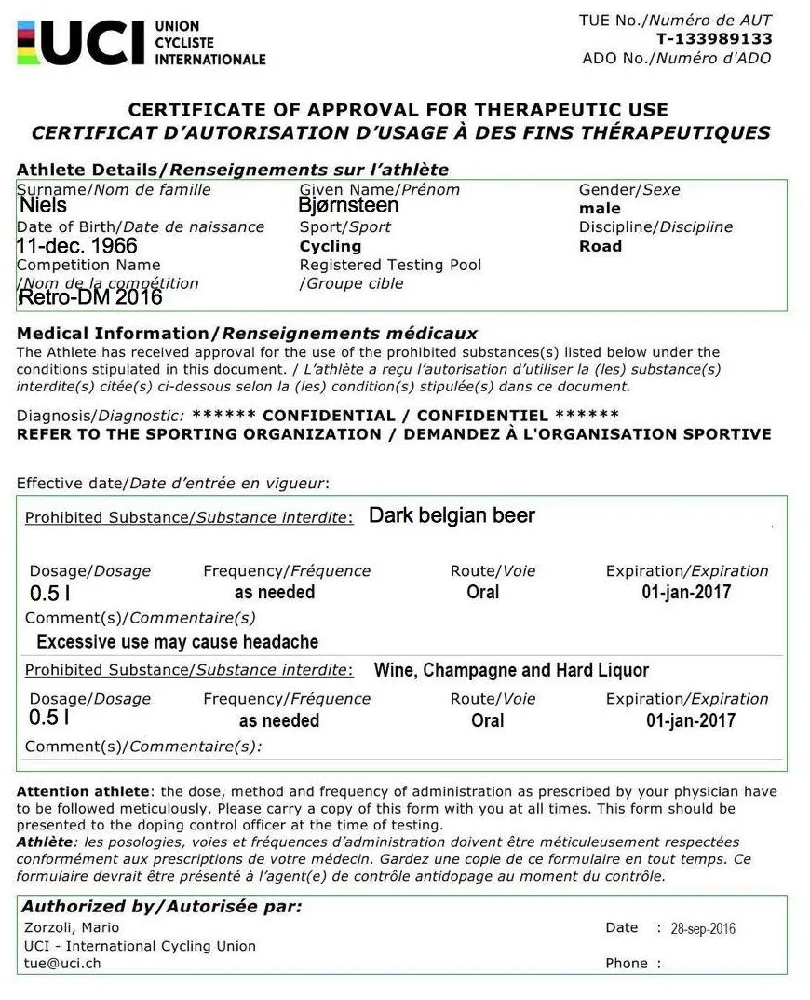

BREAKING: Squadra Molteni TUE-dokumenter lækket

Sportsmedierne flyder over med lækkede TUE-dokumenter. De sædvanlige doping-journaliser savler og gnider sig i hænderne – og en lang række sportsfolk har lagt sig i natostilling under deres køkkenbord.
På Squadra Molteni tager vi, som altid skandalerne med sindsro – og oppe fra og ned.
Vi har derfor valgt, at lække vores egne TUE-dokumenter gældende for det kommende Retro-DM.
Fuldt tilgængelige wikileaks.org
Squadra Moltenis TUE dokumenter ligger til fri afbenyttelse på Wikileaks.org.

Og til dem der ikke gider at lede efter dokumenterne, kan vi oplyse, at alle ryttere på Squadra Molteni har tilladelser, der er identiske med Kaptajn Bjørnsteens (herunder) til brug af mørk belgisk øl, vin, champagne og spiritus.